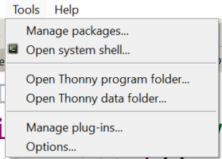
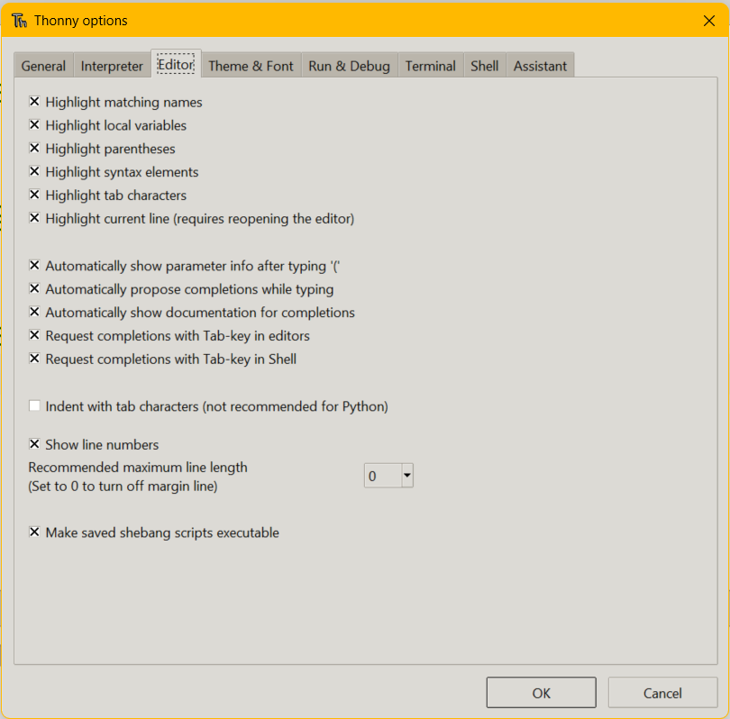

0. Python IDE Setup¶
Python is a programming language that lets you teach the computer to do what you want. You’ve already been writing Python programs using Reeborg. Everything you have already learned (with the exception of repeat), works in regular Python. Using regular Python allows us to start exploring other ways our programs can produce output, and take input.
Note
The following information is for getting your software setup and configured for use at home. It might not be perfect and univsersal for every platform and device, however it should be similar.
0.1. Required Software¶
Whenever you are creating programs with code, you generally will be using software called an IDE (Integrated Development Environment). Similar to how you use a Word Processor for writing documents, you will use your IDE for writing code files.
The IDE we will be using this semester for Python programming is called Thonny. Once advantage of Thonny is that it is available for Windows, Mac, and Linux (including some chromebooks), and that it includes a version of Python built into the software so you don't need to install multiple pieces of software. Generally speaking, wherever you can install Thonny, you should be able to do anything you can do in class and continue where you left off on a project.
Click here to download Thonny for your computer.
On the Thonny website, you will hover over the link for your computer (Windows, Mac, or Linux) in the "download version for 4.1.x" area on the top right. Then you should see a popup to download the installer, generally you will select the first option (64 bit installer).
Once the file has downloaded, open it and proceed through the installer. The default options should all be fine for our purposes.
0.2. Thonny Configuration¶
Once you have installed Thonny, navigate to your start menu/application launcher and open the software.
Within Thonny, there are a few important settings you must configure to ensure a consistent experience.
First, Please navigate to the Tools dropdown menu, and select the "Options..." button.

Next, switch to the "Editor" tab. Every option on this page should be checked except for "Indent with tab characters (not recommended for Python). See below for a visual.

Finally, click "OK" to save your changes. Close Thonny and reopen the program to ensure these changes have been applied.
This will provide you with autocomplete popups and various warning highlights while working on your code, helping assist you in seeing problems
1.3. Whitespace¶
Just like when you were programming Reeborg, it is really important to indent your code correctly in Python. For example, the code given below will cause a syntax error when you click the Run button. Click the Run button to see the error. Now, can you figure out how to fix it? Edit the code, then click Run again to see if you’ve fixed it!